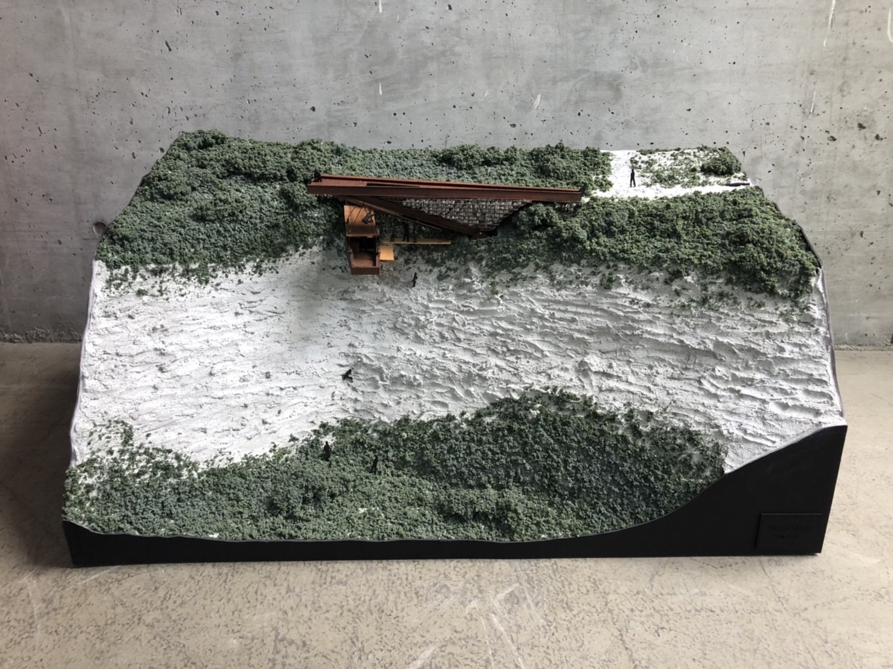
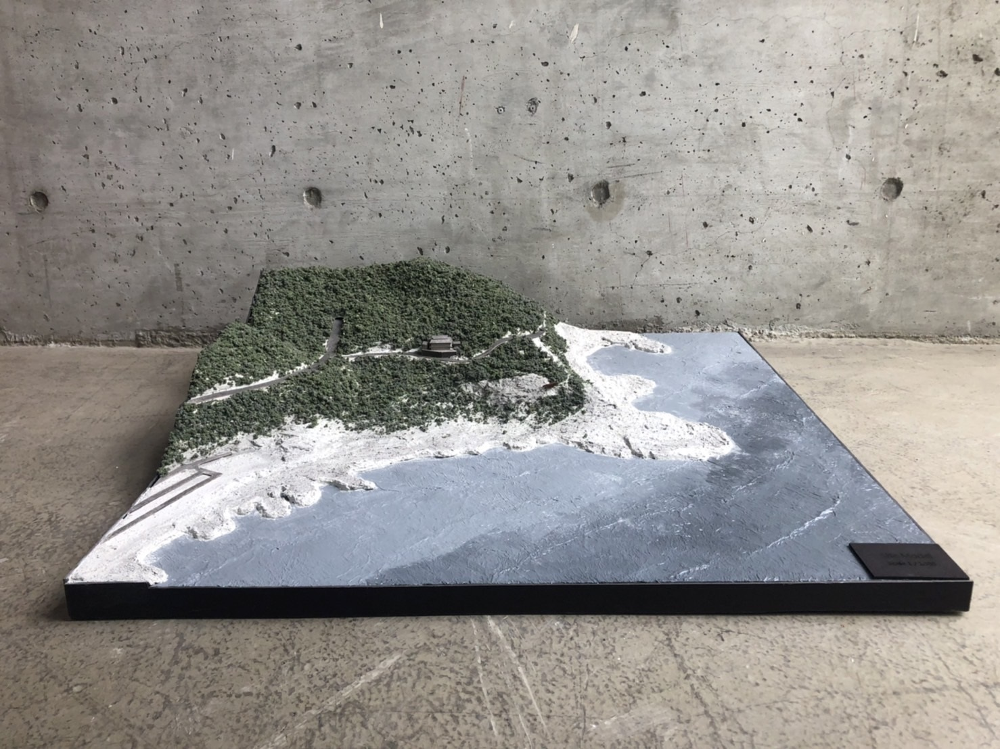
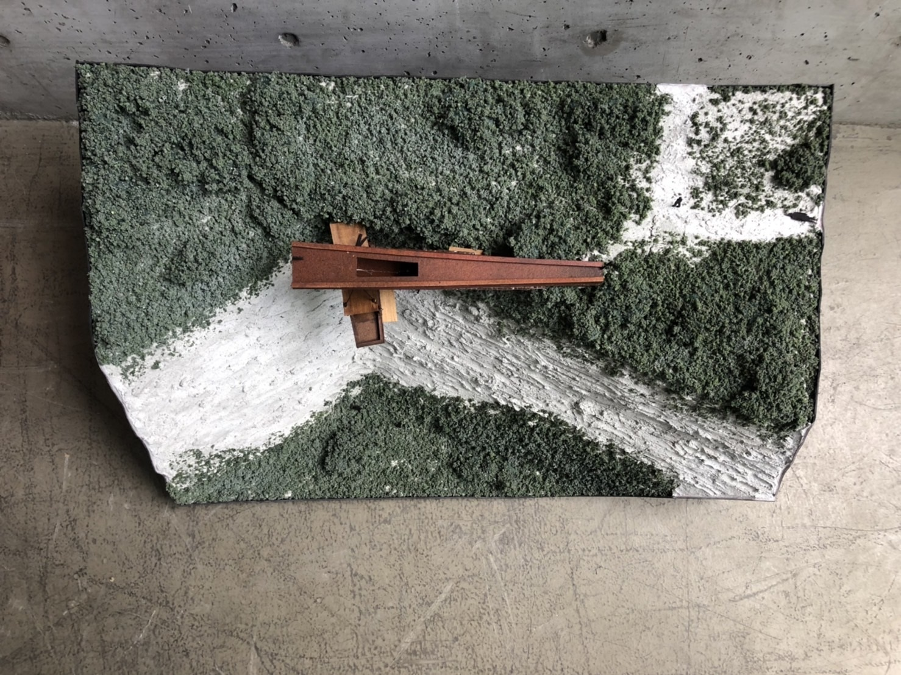
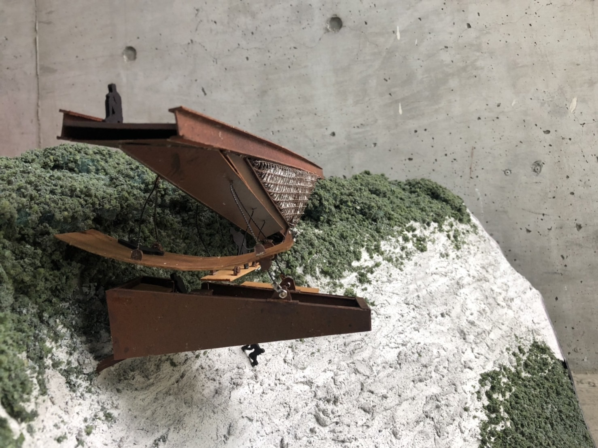
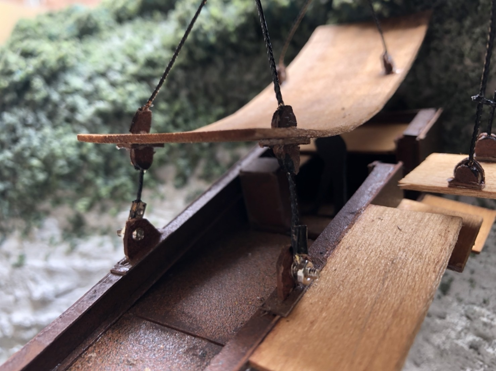

This is a sample for my architecture portfolio. The images and links are all for my 5th year thesis design. To further see the rest of my design portfolio, click below.

Design Characteristics

Site model location: Dragon Cave, New Taipei City

Topography connection to the rocky cliff and surrounding vegetations.

Site views and visual connection of cliff and seascape.

Horizontal plane hierarcy between flooring and roofing.
Synchronicity is an _acasual principle and can be defined by a _meaningful coincidence which appears between a mental state and an event occurring in the external world.
-Carl Jung
Subscribe to my Newsletter
Click here to sign up for my newsletter that will be sent out to your email monthly.